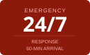

San Francisco's Trusted Water Damage Restoration Experts
Certified technicians on call around the clock. We respond within 60 minutes, work directly with your insurance, and restore your property to pre-loss condition.
Trusted & Certified

What We Do
Complete Restoration Services
From emergency water extraction to full structural rebuilds, Allied Restoration handles every phase of your Bay Area property recovery.
Water Damage Restoration
Emergency extraction, structural drying, and dehumidification for pipe bursts, flooding, and appliance failures. We document everything for your insurance claim.
Learn more →Mold Inspection & Remediation
Air sampling, moisture surveys, containment and full remediation by IICRC-certified technicians. We create a mold-free environment for your family.
Learn more →Fire & Smoke Damage Cleanup
Complete smoke and soot removal, odor elimination, and structural repairs after a fire. IICRC FSRT certified technicians.
Learn more →Sewage & Biohazard Cleanup
IICRC-certified raw sewage cleanup and biohazard decontamination. This is never a DIY job — only professionals guarantee complete sanitization.
Learn more →Mold Testing & Air Sampling
Professional mold inspection, air sample testing, and moisture surveys. We identify the source and extent of contamination before remediation begins.
Learn more →Disaster Recovery Planning
Pre-event planning for commercial properties and large residential buildings. Minimize downtime and financial loss when disaster strikes.
Learn more →Our Process
What Happens After You Call
Designed to minimize damage and stress from the first call to final walk-through.
You Call, We Answer
Our dispatch team answers 24/7/365. We dispatch the nearest crew immediately — no voicemail, no waiting.
On-Site in 60 Min
Technicians arrive with full equipment — extractors, moisture meters, and drying gear — ready to work.
Damage Assessment
We document all damage with photos, moisture readings, and a written report. We contact your insurer.
Mitigation & Drying
We extract water, install equipment, and monitor daily until the structure reaches dry standard.
Reconstruction
Full Xactimate estimate and rebuild coordination with your insurance adjuster.
Why Allied
15 Years Restoring Bay Area Homes & Businesses
Founded in 2010, Allied Restoration has earned the trust of thousands of homeowners, property managers, and insurance carriers.
IICRC Certified & EPA Lead-Safe
All technicians certified to IICRC S500, S520, and S770 standards for water, mold, and fire restoration.
Direct Insurance Billing
We submit Xactimate documentation directly to your carrier with pre-negotiated rates — less hassle for you.
60-Minute Emergency Response
Four Bay Area offices mean we're never far. SF, Petaluma, Walnut Creek, or San Jose — we arrive fast.
Residential & Commercial
From single-family homes to 370-unit apartment complexes — same quality, every scale.
Insurance Claims We Handle
- ✓Pipe burst & plumbing failure
- ✓Appliance overflow
- ✓Roof leak & storm damage
- ✓Slab leak & foundation moisture
- ✓Fire & smoke damage
- ✓Mold due to hidden moisture
- ✓Sewage backup & drain overflow
Carriers we work with:
State Farm · Allstate · Farmers · USAA · Travelers · Chubb · Nationwide · Liberty Mutual · AAA · Hippo
Reviews
What Our Clients Say
Hundreds of Bay Area homeowners and property managers trust Allied Restoration.
"Geronimo and his partner saved the day when they came to my home after a severe leak. They acted quickly and professionally. The professionalism of Misty who took my initial call was exceptional — all leading to a great result!"
"Our 370-unit property uses Allied exclusively. The entire team is very responsive and informative. Prices are competitive, workmanship is excellent. Allied works seamlessly with our insurance adjusters on larger projects."
"BRAVO — job well done! Workers were at the house within 15 minutes. Drying fans installed, heating pads on hardwood floors, walls opened and dehumidifying tubes installed. Excellent, professional care."
"These folks are real pros! Quick, careful, efficient and tremendously considerate. They left everything like new and helped me deal with the insurance reviewer. I would not go anywhere else."
Service Areas
Four Bay Area Offices. One Call Does It All.
With offices in San Francisco, Petaluma, Walnut Creek, and San Jose, we reach any Bay Area property within 60 minutes.
SF neighborhoods: Pacific Heights · Russian Hill · Western Addition · Noe Valley · Castro · Mission · Potrero Hill · SoMa · Financial District · North Beach · Marina · Richmond · Sunset · Nob Hill · Chinatown · NOPA · Haight-Ashbury · Bernal Heights · Excelsior · Visitacion Valley · Bayview · Twin Peaks · Seacliff · Parkside · Presidio
FAQ
Common Questions
Latest Articles
Restoration Tips & Resources
Our Team
The People Behind Team Allied
Our IICRC-certified technicians, project managers, and support staff are ready to respond — 24 hours a day, 7 days a week, 365 days a year.